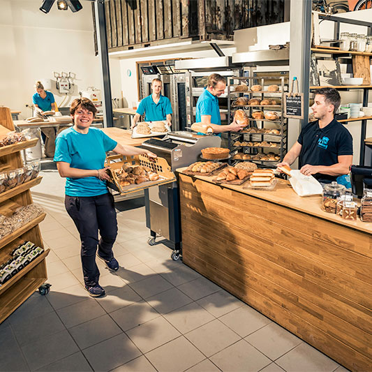
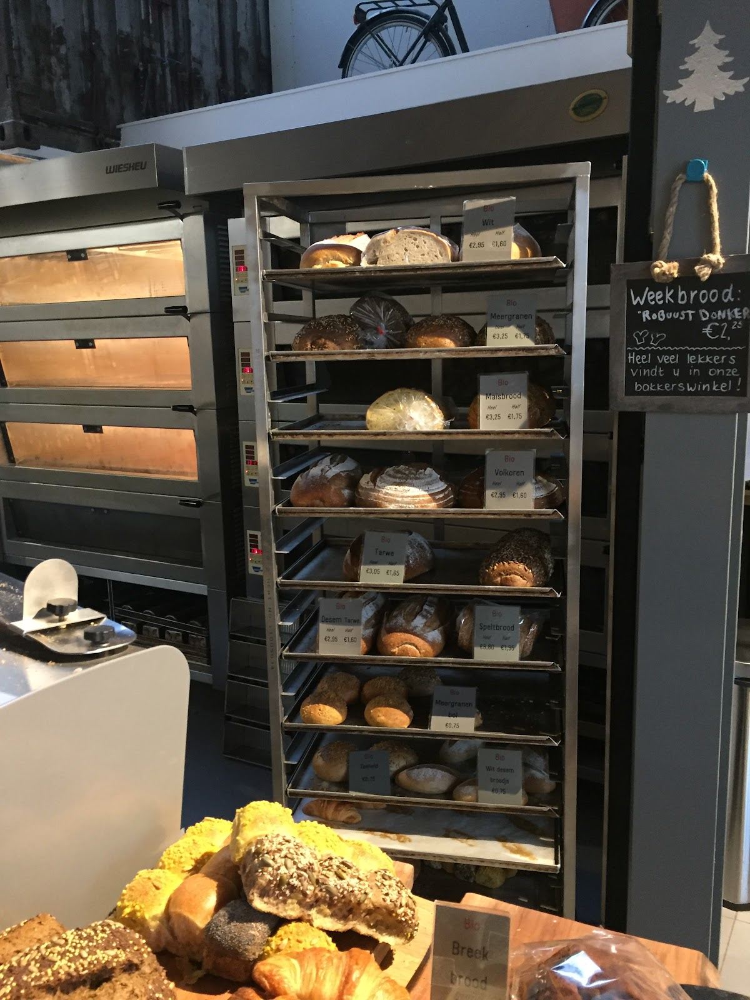
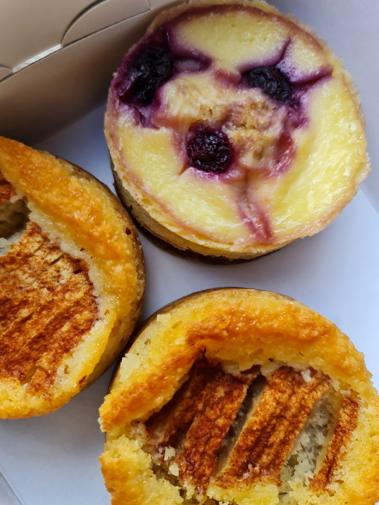
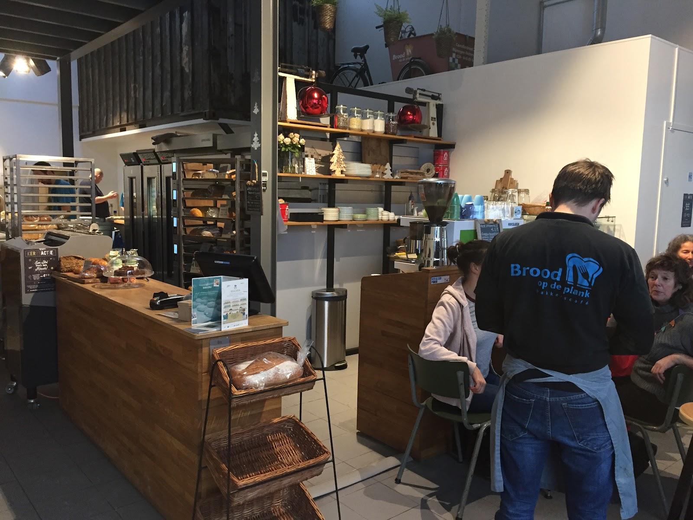
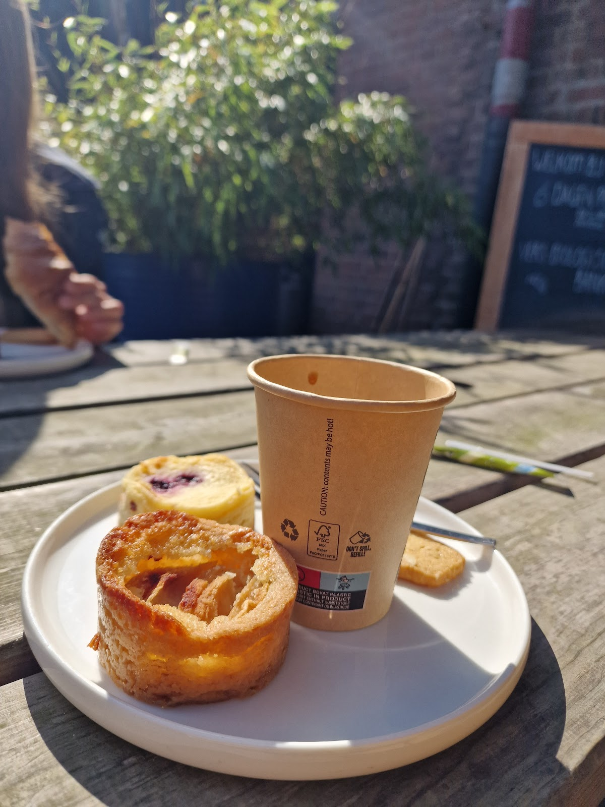
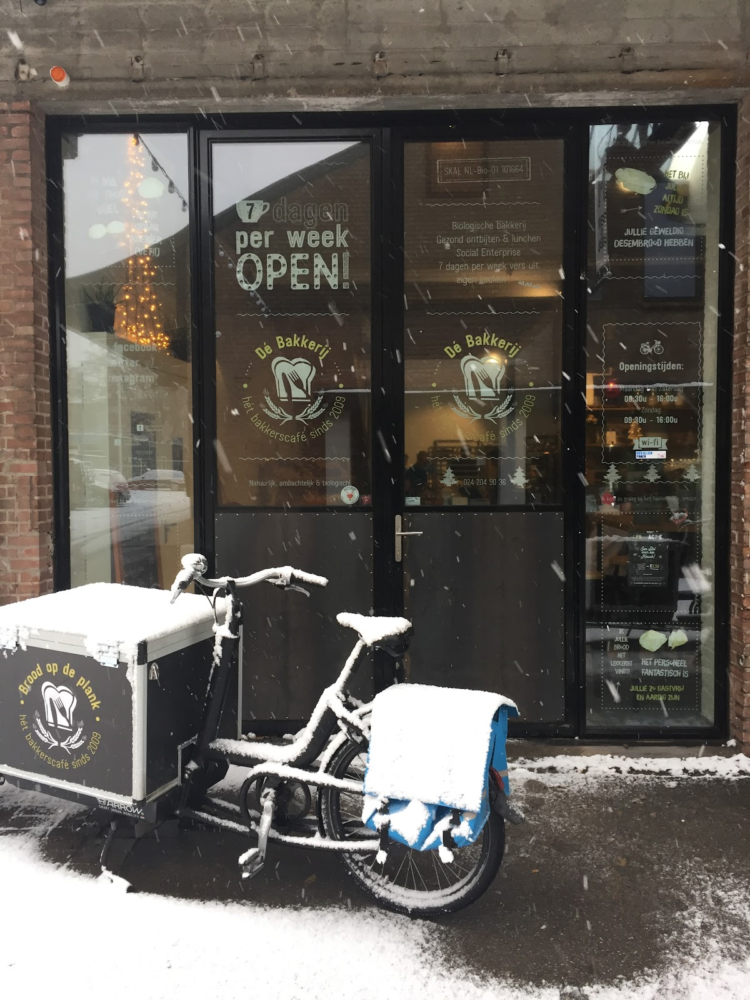

Biologisch brood, gebakken waar je bij staat
In de open bakkerij in De Houtwerf bakken we zes dagen per week biologisch brood en banket. Het deeg wordt meermaals gekneed, rust lang en gaat knapperig de oven uit, zo het schap in.
Ma t/m vr 08:30 tot 16:00, za 08:30 tot 15:30, zondag dicht.


- Witte Molenmeel op molenstenen, gemalen door Nijmeegse wind
- SKALgecertificeerd biologisch
- Sinds 2009Hét Bakkerscafé in Nijmegen
- 4,7 op Googleuit 42 reviews
Wat er in het rek ligt
We houden het assortiment bewust klein, zodat elk brood goed is. Alles biologisch, alles zelf gebakken. Onder meer:
- Desem tarweBio
- VolkorenBio
- SpeltbroodBio
- MeergranenBio
- MaisbroodBio
- Tarwe en witBio
- Bolletjes en wit desembroodjesBio
Croissants?Kom op tijd. Vroeg in de ochtend zijn ze net vers gebakken.
Brood van gisterenstaat in een aparte bak en is goedkoper. Zonde om weg te gooien.

En een punt bij de koffie
Naast brood bakken we smaakvol banket: appeltaart, notentaartjes, koekjes. Neem het mee naar huis of eet het hier, met een kop koffie erbij.
Een taart of grotere bestelling? Bel even, dan zetten we het voor je klaar.
Bestellen: 024 204 90 36
Onder de bogen van De Houtwerf
Kijk omhoog en je ziet de boogplafonds van de oude Houtwerf, met een zeecontainer die er brutaal uitsteekt. Ruik goed en je ruikt croissants.
Onze bakkerij is open: vanaf de toonbank zie je de bakkers aan het werk. Wil je niet meteen weg? Ga zitten met een kop koffie, een stuk taart of een belegd broodje.
De Houtwerf is een plek waar ondernemers elkaar opzoeken, met de wijk en de stad. Ambacht, kunst, design en duurzaamheid onder één dak.


"Als je binnenkomt zie je ons bakkers aan het werk. Alles is biologisch en wordt door ons gemaakt."Marjorie, op Google
Het kan wél!
Dat is ons motto. Hét Bakkerscafé is een sociale onderneming: een stichting met ANBI-status, opgenomen in het register van de Code Sociale Ondernemingen.
In onze bakkerij, winkels en lunchroom werkt een heel divers team. Mensen met een afstand tot de arbeidsmarkt krijgen hier de ruimte om zich op hun eigen niveau en tempo te ontwikkelen: in de bakkerij, de winkel, de keuken, de lunchroom, de administratie of als koerier.
We gaan uit van hóe iets kan, niet óf het kan. En het brood moet gewoon het beste van Nijmegen zijn. Dat is geen goed doel, dat is vakwerk.
Meer weten over trajecten? Mail trajecten@bakkerscafe.nl
Wat de buurt zegt
4,7 uit 42 Google-reviews
"Smakelijk biologisch brood. De desem tarwe is onze favoriet! Voor croissantjes kun je het beste vroeg zijn, want dan zijn ze net vers gebakken.
Je kunt er ook zitten en een belegd broodje eten.
Van alle bakkers in de buurt, vind ik hier het beste brood."
"Leuke bakkerij die biologisch brood verkoopt. Hebben ook broodjes om af te halen en een bak met brood van gisteren wat je goedkoper kan kopen. Op kleine 10 minuten loopafstand van het Radboudt UMC. Broodjes lekkerder dan in het ZH."
"Lekker biologisch brood. Fijn dat je bijdraagt aan een concept met maatschappelijke waarde."
Langskomen
Adres
Dé BakkerijHatertseweg 23c
6533 AB Nijmegen Open in Google Maps
Contact
024 204 90 36
post@bakkerscafe.nl
Bakkerijbestellingen gaan het snelst telefonisch.
Openingstijden
| Maandag | 08:30 tot 16:00 |
| Dinsdag | 08:30 tot 16:00 |
| Woensdag | 08:30 tot 16:00 |
| Donderdag | 08:30 tot 16:00 |
| Vrijdag | 08:30 tot 16:00 |
| Zaterdag | 08:30 tot 15:30 |
| Zondag | gesloten |
Feestdagen gesloten.
Op zondag zit je goed bij onze lunchroom Brood op de plank, Castellastraat 29. Daar ligt elke ochtend ons brood, gebracht door onze eigen fiets- en rolstoelkoeriers. 024 848 85 60
